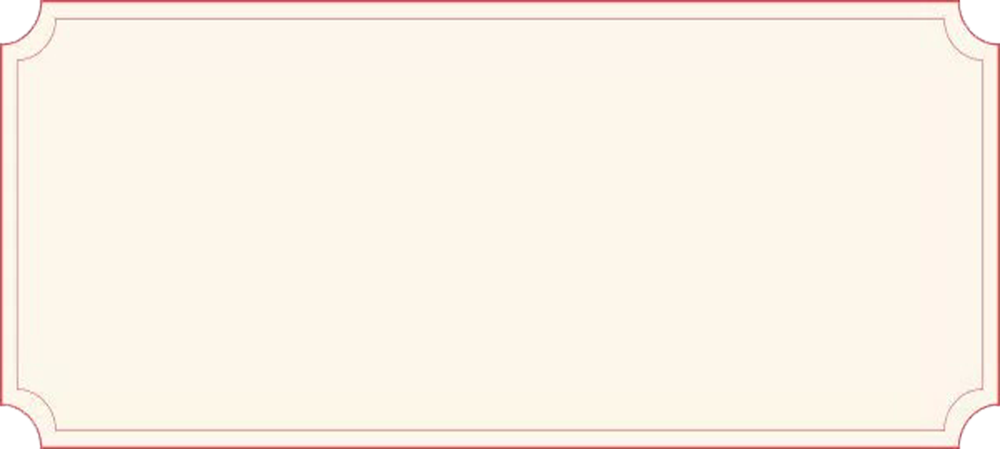
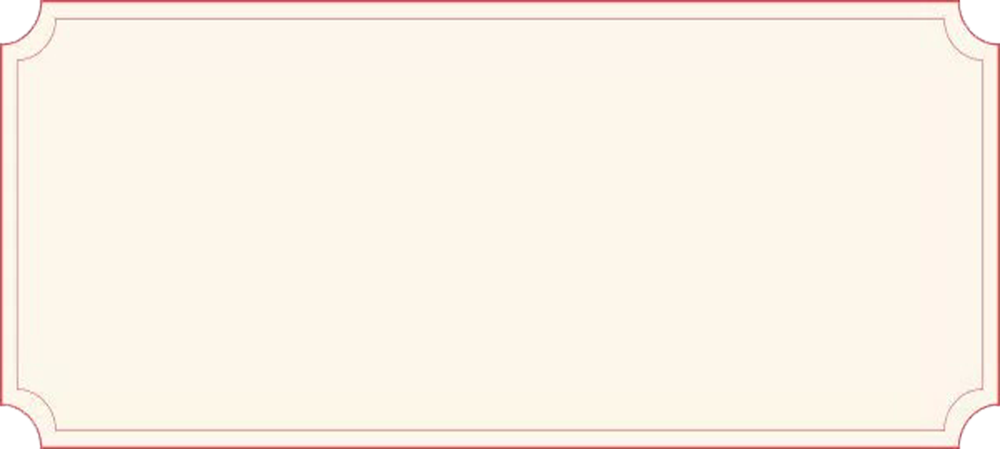

话说青年才俊鲁班，非常宠爱妹妹，对妹妹的要求无不满足。
这天他和妹妹在西湖边一边走一边看风景，风景迷人，
以至于他们没有发现变天了。一阵大雨下来，兄妹两人无处躲藏，
淋得像只落汤鸡。第二天，鲁班的妹妹对鲁班说：“哥，你那么聪明，
能做出让我既能看到西湖，又不会淋到雨的房子吗？”鲁班答应了，
第二天，鲁班就在西湖边造了一座亭子，只见亭子翘檐红柱，四周是空的，
完全没有视线的阻碍，雨淋不到，太阳晒不到，非常的漂亮。
鲁班的妹妹说：“哥哥，你做的这个亭子好是好，可是我只能站在一个地方，
不能走动，我要和你比赛，我也要造一个既能躲雨，又能看西湖的亭子”。鲁班听了，
立即沿着西湖造了十个亭子，造第十座亭子的时候被她妹妹学鸡叫，鲁班以为天亮了，
只造了半座，到现在还在小瀛洲的九曲桥上面。天亮了，鲁班沿着西湖为妹妹造了形态
各异的十座亭子，他想这下妹妹可以不被雨淋日晒就能游西湖了。可是只见她妹妹拿出
一个和亭子一样的、但是比亭子小得多了的一个东西，也是有檐角，中间一根柱子，
32根长骨子，用32根短骨子撑开，中间一个插销，不让骨子缩下去，长骨子的顶端长出伞面，
就像亭子的檐角。妹妹说我可以拿着这个小亭子沿着西湖边走边游湖，照样不被日晒雨淋。
鲁班见到这个东西，不得不佩服妹妹的聪明，而妹妹说是因为得到了哥哥亭子的启发。
由于雨滴落在上面会向四周散开去，于是被人叫成了“雨散”，还造出了这个象形字“傘”。